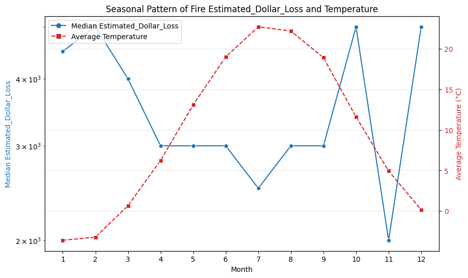
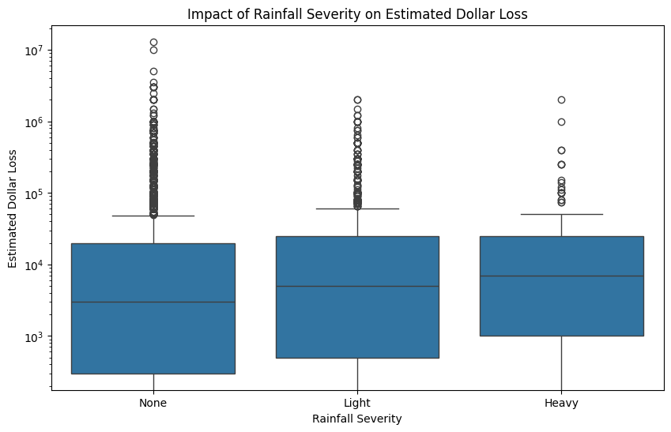
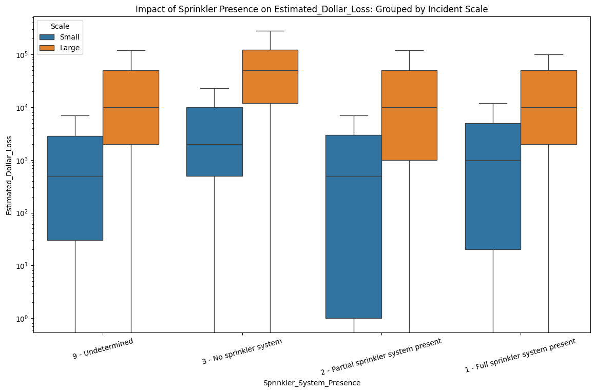
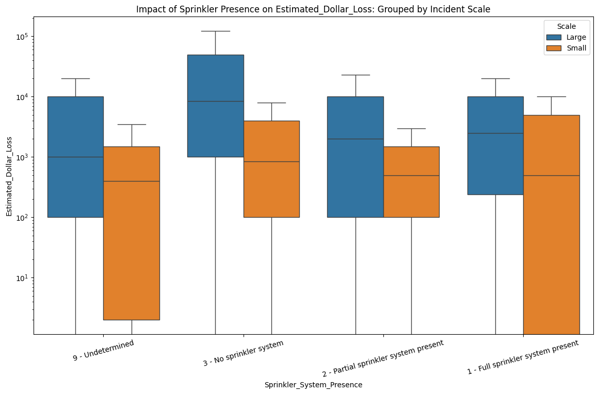
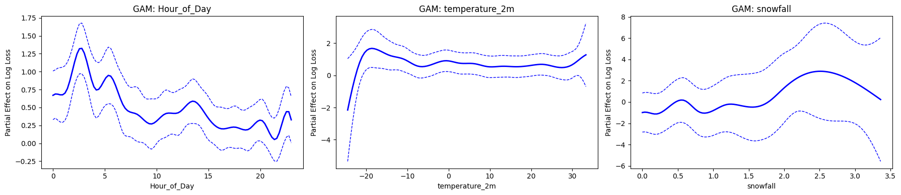
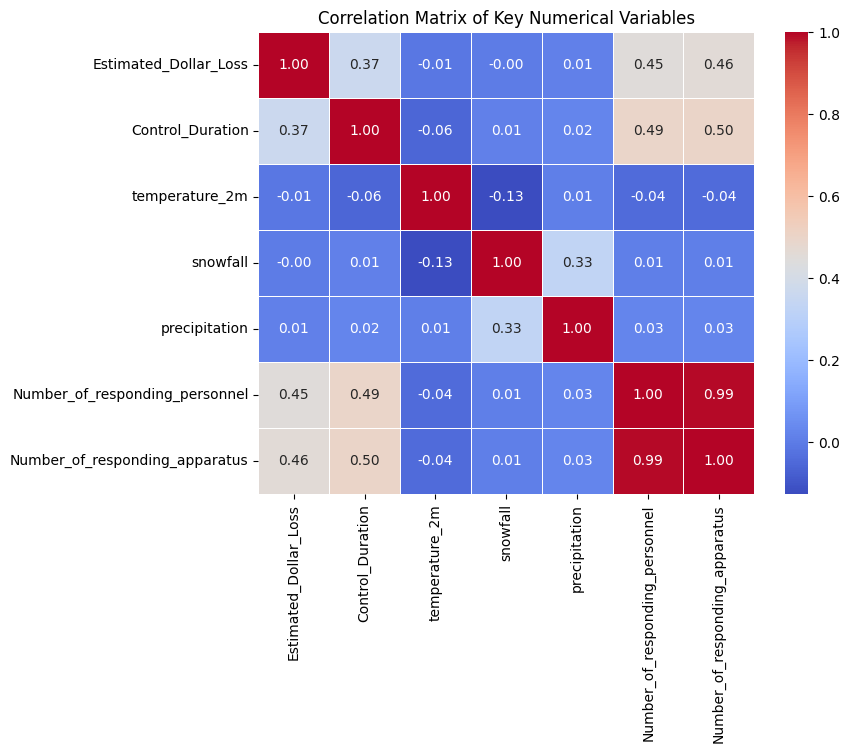
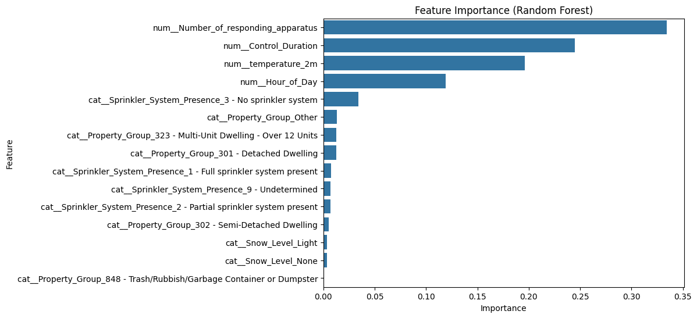
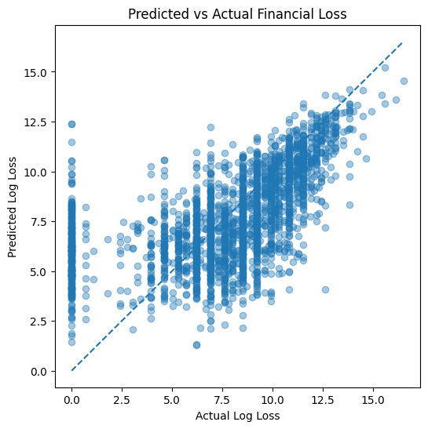

import pandas as pd
import numpy as np
import matplotlib.pyplot as plt
import seaborn as sns
%matplotlib inlinedf = pd.read_csv("fire.csv")C:\Users\Elowe\AppData\Local\Temp\ipykernel_19496\2948116887.py:1: DtypeWarning:
Columns (5) have mixed types. Specify dtype option on import or set low_memory=False.
df.columnsIndex(['_id', 'Incident_Number', 'Initial_CAD_Event_Type',
'Final_Incident_Type', 'Exposures', 'Incident_Station_Area',
'Incident_Ward', 'Intersection', 'Latitude', 'Longitude',
'Property_Use', 'Building_Status', 'TFS_Alarm_Time', 'TFS_Arrival_Time',
'Ext_agent_app_or_defer_time', 'Fire_Under_Control_Time',
'Last_TFS_Unit_Clear_Time', 'Number_of_responding_apparatus',
'Number_of_responding_personnel', 'Count_of_Persons_Rescued',
'TFS_Firefighter_Casualties', 'Civilian_Casualties',
'Estimated_Number_Of_Persons_Displaced', 'Estimated_Dollar_Loss',
'Business_Impact', 'Status_of_Fire_On_Arrival',
'Method_Of_Fire_Control', 'Area_of_Origin', 'Level_Of_Origin',
'Extent_Of_Fire', 'Smoke_Spread', 'Ignition_Source',
'Material_First_Ignited', 'Possible_Cause',
'Smoke_Alarm_at_Fire_Origin',
'Smoke_Alarm_at_Fire_Origin_Alarm_Failure',
'Smoke_Alarm_at_Fire_Origin_Alarm_Type',
'Smoke_Alarm_Impact_on_Persons_Evacuating_Impact_on_Evacuation',
'Fire_Alarm_System_Presence', 'Fire_Alarm_System_Operation',
'Fire_Alarm_System_Impact_on_Evacuation', 'Sprinkler_System_Presence',
'Sprinkler_System_Operation', 'Alarm_Time', 'Arrival_Time', 'Duration',
'Hourly_Timestamp', 'time', 'temperature_2m', 'snowfall',
'precipitation'],
dtype='object')from sklearn.model_selection import train_test_split
time_cols = ['TFS_Alarm_Time', 'TFS_Arrival_Time', 'Fire_Under_Control_Time', 'Hourly_Timestamp']
for col in time_cols:
df[col] = pd.to_datetime(df[col])
df['Control_Duration'] = (df['Fire_Under_Control_Time'] - df['TFS_Arrival_Time']).dt.total_seconds()
df['Hour_of_Day'] = df['Hourly_Timestamp'].dt.hour
df['is_weekend'] = df['Hourly_Timestamp'].dt.dayofweek >= 5
def categorize_event(x):
x = str(x)
if "Fire" in x or x.startswith("FI"):
return "Fire"
else:
return "Other"
df["Event_Category"] = df["Initial_CAD_Event_Type"].apply(categorize_event)
df = df[df["Event_Category"]=="Fire"]
df_train_val, df_test = train_test_split(df, test_size=0.2, random_state=42)
df_train, df_val = train_test_split(df_train_val, test_size=0.2, random_state=42)
df_analysis = df_train[(df_train['Control_Duration'] > 0) & (df_train['Control_Duration'] < 14400)].copy()
df_analysis['Incident_Station_Area'] = df_analysis['Incident_Station_Area'].astype(int)df_analysis.isnull().sum()_id 0
Incident_Number 0
Initial_CAD_Event_Type 0
Final_Incident_Type 0
Exposures 8641
Incident_Station_Area 0
Incident_Ward 33
Intersection 0
Latitude 0
Longitude 0
Property_Use 0
Building_Status 2762
TFS_Alarm_Time 0
TFS_Arrival_Time 0
Ext_agent_app_or_defer_time 48
Fire_Under_Control_Time 0
Last_TFS_Unit_Clear_Time 0
Number_of_responding_apparatus 0
Number_of_responding_personnel 0
Count_of_Persons_Rescued 0
TFS_Firefighter_Casualties 0
Civilian_Casualties 2226
Estimated_Number_Of_Persons_Displaced 2762
Estimated_Dollar_Loss 25
Business_Impact 2763
Status_of_Fire_On_Arrival 47
Method_Of_Fire_Control 47
Area_of_Origin 47
Level_Of_Origin 2763
Extent_Of_Fire 2763
Smoke_Spread 2763
Ignition_Source 46
Material_First_Ignited 67
Possible_Cause 46
Smoke_Alarm_at_Fire_Origin 2764
Smoke_Alarm_at_Fire_Origin_Alarm_Failure 2764
Smoke_Alarm_at_Fire_Origin_Alarm_Type 2764
Smoke_Alarm_Impact_on_Persons_Evacuating_Impact_on_Evacuation 2764
Fire_Alarm_System_Presence 2764
Fire_Alarm_System_Operation 2764
Fire_Alarm_System_Impact_on_Evacuation 2764
Sprinkler_System_Presence 2764
Sprinkler_System_Operation 2764
Alarm_Time 0
Arrival_Time 0
Duration 0
Hourly_Timestamp 0
time 0
temperature_2m 0
snowfall 0
precipitation 0
Control_Duration 0
Hour_of_Day 0
is_weekend 0
Event_Category 0
dtype: int64Examine the target variable
df_analysis['Estimated_Dollar_Loss'].describe()count 1.120000e+04
mean 3.830575e+04
std 2.093271e+05
min 0.000000e+00
25% 3.000000e+02
50% 3.000000e+03
75% 2.000000e+04
max 1.300000e+07
Name: Estimated_Dollar_Loss, dtype: float64plt.hist(df_analysis[df_analysis["Estimated_Dollar_Loss"] < 1e5]["Estimated_Dollar_Loss"],
bins=20, color='skyblue', edgecolor='black')
plt.title('Distribution of Estimated Dollar Loss (Under $100,000)')
plt.xlabel('Estimated Dollar Loss')
plt.ylabel('Number of Incidents')
plt.grid(axis='y', linestyle='--', alpha=0.7)
plt.show()
Examine some Categorical values
print(df_analysis["Initial_CAD_Event_Type"].value_counts())Initial_CAD_Event_Type
FIR 3197
FIHR 1426
Fire - Residential 1279
FIG 1079
FICI 1073
Vehicle Fire 669
Fire - Highrise Residential 501
Fire - Grass/Rubbish 431
Fire - Commercial/Industrial 415
Vehicle Fire - Highway 229
FIHRD 117
FITP 97
FIO 94
FIS 80
FIOS 51
FIHV 41
FIG2 40
FII 39
Fire - Highrise Residential - Downtown 34
Fire - Transformer/Pole 32
Fire - Other 31
FIHCD 27
Fire - Outside Storage 27
Fire - Subway 23
Vehicle Fire - Underground 22
FIIS 21
Vehicle Accident with Fire 21
FIU 18
Fire - Institution - School 14
Fire - Institution 13
Fire - Encampment 11
Fire - Hydro Vault 11
FIHC 11
FISD 8
FIID 8
Fire - Highrise Commercial 6
Natural Gas Fire 6
Fire - Highrise Commercial - Downtown 5
Fire Highrise Residential North 4
Fire Waterfront Marina/Industrial 2
Fire Alarm - Check Call 2
Island Fire Alarm Response 1
FIHRN 1
FIHCN 1
FIW 1
Island - Fire Response 1
Fire - Waterfront 1
Vehicle Fire - Highway Elevated 1
Fire - Institution - Downtown 1
Fire - Alarm Waterfront Highrise 1
FIWMI 1
Name: count, dtype: int64print(df_analysis["Property_Use"].value_counts())Property_Use
301 - Detached Dwelling 2021
323 - Multi-Unit Dwelling - Over 12 Units 1815
302 - Semi-Detached Dwelling 623
848 - Trash/Rubbish/Garbage Container or Dumpster 566
323 - Multi-Unit Dwelling Over 12 Units 544
...
735 - Sto: Job Printing (eg forms, greeting cards, etc) 1
626 - Mfg:Rubber Goods 1
232 - Halfway/transitional house 1
206 - Psychiatric Hospital (with detention quarters) 1
529 - Book/Stationary/Art Supply Store 1
Name: count, Length: 307, dtype: int64print(df_analysis["Building_Status"].value_counts())Building_Status
01 - Normal (no change) 7251
08 - Not Applicable 510
02 - Under Renovation 395
03 - Under Construction 116
05 - Abandoned, vacant (long term) 93
09 - Undetermined 86
04 - Under Demolition 12
Name: count, dtype: int64EDA with Visuals
df_analysis.dtypes_id int64
Incident_Number object
Initial_CAD_Event_Type object
Final_Incident_Type object
Exposures float64
Incident_Station_Area int32
Incident_Ward float64
Intersection object
Latitude float64
Longitude float64
Property_Use object
Building_Status object
TFS_Alarm_Time datetime64[ns]
TFS_Arrival_Time datetime64[ns]
Ext_agent_app_or_defer_time object
Fire_Under_Control_Time datetime64[ns]
Last_TFS_Unit_Clear_Time object
Number_of_responding_apparatus float64
Number_of_responding_personnel float64
Count_of_Persons_Rescued float64
TFS_Firefighter_Casualties float64
Civilian_Casualties float64
Estimated_Number_Of_Persons_Displaced float64
Estimated_Dollar_Loss float64
Business_Impact object
Status_of_Fire_On_Arrival object
Method_Of_Fire_Control object
Area_of_Origin object
Level_Of_Origin object
Extent_Of_Fire object
Smoke_Spread object
Ignition_Source object
Material_First_Ignited object
Possible_Cause object
Smoke_Alarm_at_Fire_Origin object
Smoke_Alarm_at_Fire_Origin_Alarm_Failure object
Smoke_Alarm_at_Fire_Origin_Alarm_Type object
Smoke_Alarm_Impact_on_Persons_Evacuating_Impact_on_Evacuation object
Fire_Alarm_System_Presence object
Fire_Alarm_System_Operation object
Fire_Alarm_System_Impact_on_Evacuation object
Sprinkler_System_Presence object
Sprinkler_System_Operation object
Alarm_Time object
Arrival_Time object
Duration float64
Hourly_Timestamp datetime64[ns]
time object
temperature_2m float64
snowfall float64
precipitation float64
Control_Duration float64
Hour_of_Day int32
is_weekend bool
Event_Category object
dtype: objectdf_analysis.describe()| _id | Exposures | Incident_Station_Area | Incident_Ward | Latitude | Longitude | TFS_Alarm_Time | TFS_Arrival_Time | Fire_Under_Control_Time | Number_of_responding_apparatus | ... | Civilian_Casualties | Estimated_Number_Of_Persons_Displaced | Estimated_Dollar_Loss | Duration | Hourly_Timestamp | temperature_2m | snowfall | precipitation | Control_Duration | Hour_of_Day | |
|---|---|---|---|---|---|---|---|---|---|---|---|---|---|---|---|---|---|---|---|---|---|
| count | 11225.000000 | 2584.000000 | 11225.000000 | 11192.000000 | 11225.000000 | 11225.000000 | 11225 | 11225 | 11225 | 11225.000000 | ... | 8999.000000 | 8463.000000 | 1.120000e+04 | 11225.000000 | 11225 | 11225.000000 | 11225.000000 | 11225.000000 | 11225.000000 | 11225.000000 |
| mean | 16587.736927 | 0.185759 | 285.480000 | 16.034221 | 43.703957 | -79.395496 | 2018-03-01 03:50:32.368908800 | 2018-03-01 03:55:44.436614656 | 2018-03-01 04:09:37.970512384 | 8.685702 | ... | 0.091566 | 18.666076 | 3.830575e+04 | 312.067706 | 2018-03-01 03:20:17.104677120 | 9.986227 | 0.009616 | 0.086111 | 833.533898 | 13.111269 |
| min | 2.000000 | 0.000000 | 111.000000 | 0.000000 | 0.000000 | -79.636530 | 2011-01-01 00:06:48 | 2011-01-01 00:12:54 | 2011-01-01 01:54:00 | 0.000000 | ... | 0.000000 | 0.000000 | 0.000000e+00 | -962.000000 | 2011-01-01 00:00:00 | -24.500000 | 0.000000 | 0.000000 | 1.000000 | 0.000000 |
| 25% | 8611.000000 | 0.000000 | 213.000000 | 7.000000 | 43.663540 | -79.481987 | 2014-08-22 11:42:14 | 2014-08-22 11:45:44 | 2014-08-22 11:53:12 | 5.000000 | ... | 0.000000 | 0.000000 | 3.000000e+02 | 251.000000 | 2014-08-22 11:00:00 | 1.800000 | 0.000000 | 0.000000 | 190.000000 | 8.000000 |
| 50% | 15362.000000 | 0.000000 | 313.000000 | 14.000000 | 43.701640 | -79.406573 | 2018-07-04 17:21:04 | 2018-07-04 17:26:52 | 2018-07-04 17:29:57 | 6.000000 | ... | 0.000000 | 0.000000 | 3.000000e+03 | 301.000000 | 2018-07-04 17:00:00 | 9.800000 | 0.000000 | 0.000000 | 404.000000 | 14.000000 |
| 75% | 24240.000000 | 0.000000 | 411.000000 | 23.000000 | 43.751360 | -79.331410 | 2021-06-14 03:35:50 | 2021-06-14 03:41:31 | 2021-06-14 03:47:34 | 11.000000 | ... | 0.000000 | 2.000000 | 2.000000e+04 | 360.000000 | 2021-06-14 03:00:00 | 19.100000 | 0.000000 | 0.000000 | 864.000000 | 19.000000 |
| max | 36543.000000 | 6.000000 | 445.000000 | 44.000000 | 43.855400 | 0.000000 | 2024-12-31 22:51:15 | 2024-12-31 22:55:05 | 2024-12-31 23:39:00 | 175.000000 | ... | 6.000000 | 999.000000 | 1.300000e+07 | 17871.000000 | 2024-12-31 22:00:00 | 33.300000 | 3.360000 | 8.500000 | 14379.000000 | 23.000000 |
| std | 9864.898087 | 0.583963 | 109.258451 | 10.702874 | 0.415917 | 0.756686 | NaN | NaN | NaN | 7.449337 | ... | 0.375179 | 126.952297 | 2.093271e+05 | 201.929674 | NaN | 10.494446 | 0.086190 | 0.386696 | 1337.064360 | 6.630415 |
8 rows × 23 columns
import plotly.express as px
df_map = df_analysis.dropna(subset=['Latitude', 'Longitude', 'Control_Duration', "Estimated_Dollar_Loss"])
df_map = df_map[df_map['Control_Duration'] < 7200]
fig = px.scatter_mapbox(df_map,
lat="Latitude",
lon="Longitude",
color="Control_Duration",
size="Estimated_Dollar_Loss",
color_continuous_scale=px.colors.cyclical.IceFire,
size_max=15,
zoom=10,
mapbox_style="carto-positron",
title="Fire distribution",
hover_data=['Final_Incident_Type', 'Property_Use'])
fig.show()Unable to display output for mime type(s): application/vnd.plotly.v1+jsoncorr_matrix = df_analysis.corr(numeric_only=True)
plt.figure(figsize=(14, 10))
sns.heatmap(corr_matrix,
annot=True,
fmt=".2f",
cmap='coolwarm',
center=0,
linewidths=.5,
cbar_kws={"shrink": .8})
plt.title('Correlation Heatmap: Factors Affecting Fire Control Duration', fontsize=16)
plt.xticks(rotation=45, ha='right')
plt.show()
plt.hist(df_analysis["Control_Duration"], bins=50, color='skyblue', edgecolor='black')
plt.title("Control Duration Distribution")
plt.xlabel("Control Duration")
plt.ylabel("Frequency")Text(0, 0.5, 'Frequency')
df_analysis['Property_Use'].value_counts()Property_Use
301 - Detached Dwelling 2021
323 - Multi-Unit Dwelling - Over 12 Units 1815
302 - Semi-Detached Dwelling 623
848 - Trash/Rubbish/Garbage Container or Dumpster 566
323 - Multi-Unit Dwelling Over 12 Units 544
...
735 - Sto: Job Printing (eg forms, greeting cards, etc) 1
626 - Mfg:Rubber Goods 1
232 - Halfway/transitional house 1
206 - Psychiatric Hospital (with detention quarters) 1
529 - Book/Stationary/Art Supply Store 1
Name: count, Length: 307, dtype: int64df_analysis["Year_Month"] = df_analysis["TFS_Alarm_Time"].dt.to_period("M")
monthly_loss = (
df_analysis
.groupby("Year_Month")["Estimated_Dollar_Loss"]
.median()
.reset_index()
)
monthly_loss["Year_Month"] = monthly_loss["Year_Month"].astype(str)
plt.figure(figsize=(14,6))
sns.lineplot(
data=monthly_loss,
x=range(len(monthly_loss)),
y="Estimated_Dollar_Loss"
)
plt.yscale("log")
plt.xticks(
ticks=range(0, len(monthly_loss), 12),
labels=monthly_loss["Year_Month"][::12],
rotation=45
)
plt.xlabel("Year")
plt.ylabel("Median Loss")
plt.title("Monthly Trend of Fire Caused Loss (2011-2024)")
plt.show()
from matplotlib.lines import Line2D
df_analysis["Month"] = df_analysis["TFS_Alarm_Time"].dt.month
monthly_stats = (
df_analysis
.groupby("Month")
.agg(
median_loss=("Estimated_Dollar_Loss", "median"),
mean_temperature=("temperature_2m", "mean")
)
.reset_index()
)
fig, ax1 = plt.subplots(figsize=(10,6))
line1 = sns.lineplot(
data=monthly_stats,
x="Month",
y="median_loss",
marker="o",
ax=ax1,
color="tab:blue"
)
ax1.set_yscale("log")
ax1.set_xlabel("Month")
ax1.set_ylabel("Median Estimated_Dollar_Loss", color="tab:blue")
ax1.set_xticks(range(1,13))
ax1.set_title("Seasonal Pattern of Fire Estimated_Dollar_Loss and Temperature")
ax1.tick_params(axis='y', labelcolor="tab:blue")
ax2 = ax1.twinx()
line2 = sns.lineplot(
data=monthly_stats,
x="Month",
y="mean_temperature",
marker="s",
linestyle="--",
ax=ax2,
color="tab:red"
)
ax2.set_ylabel("Average Temperature (°C)", color="tab:red")
ax2.tick_params(axis='y', labelcolor="tab:red")
legend_elements = [
Line2D([0], [0], color="tab:blue", marker="o", label="Median Estimated_Dollar_Loss"),
Line2D([0], [0], color="tab:red", marker="s", linestyle="--", label="Average Temperature")
]
ax1.legend(handles=legend_elements, loc="upper left")
plt.grid(alpha=0.3)
plt.show()
plt.figure(figsize=(10,5))
sns.lineplot(
data=df_analysis,
x="Hour_of_Day",
y="Estimated_Dollar_Loss",
estimator="median",
errorbar=None,
marker="o"
)
plt.yscale("log")
plt.xticks(range(24))
plt.xlabel("Hour of Day")
plt.ylabel("Median Estimated_Dollar_Loss")
plt.title("Fire Estimated_Dollar_Loss by Hour of Day")
plt.grid(alpha=0.3)
plt.show()
df_analysis['Snow_Level'] = pd.cut(df_analysis['snowfall'],
bins=[-1, 0, 2, 5],
labels=['None', 'Light', 'Moderate'])
plt.figure(figsize=(10, 6))
sns.boxplot(data=df_analysis, x='Snow_Level', y='Estimated_Dollar_Loss')
plt.title('Impact of Snowfall Severity on Estimated_Dollar_Loss')
plt.yscale('log')
plt.show()
df_analysis['precipitation'].describe()count 11225.000000
mean 0.086111
std 0.386696
min 0.000000
25% 0.000000
50% 0.000000
75% 0.000000
max 8.500000
Name: precipitation, dtype: float64df_analysis['Rain_Level'] = pd.cut(
df_analysis['precipitation'],
bins=[-1, 0, 2, 5],
labels=['None', 'Light', 'Heavy']
)
plt.figure(figsize=(10, 6))
sns.boxplot(data=df_analysis, x='Rain_Level', y='Estimated_Dollar_Loss')
plt.title('Impact of Rainfall Severity on Estimated Dollar Loss')
plt.yscale('log')
plt.xlabel("Rainfall Severity")
plt.ylabel("Estimated Dollar Loss")
plt.show()
order = [
'9 - Undetermined',
'3 - No sprinkler system',
'2 - Partial sprinkler system present',
'1 - Full sprinkler system present'
]
df_analysis['Scale'] = df_analysis['Number_of_responding_apparatus'].apply(lambda x: 'Small' if x <= 5 else 'Large')
plt.figure(figsize=(14, 8))
sns.boxplot(
data=df_analysis,
x='Sprinkler_System_Presence',
y='Estimated_Dollar_Loss',
hue='Scale',
order=order,
showfliers=False
)
plt.title('Impact of Sprinkler Presence on Estimated_Dollar_Loss: Grouped by Incident Scale')
plt.xticks(rotation=15)
plt.yscale("log")
plt.show()
top_property = df_analysis["Property_Use"].value_counts().nlargest(4).index
df_analysis["Property_Group"] = df_analysis["Property_Use"].where(
df_analysis["Property_Use"].isin(top_property),
"Other"
)
order = [
'848 - Trash/Rubbish/Garbage Container or Dumpster',
'302 - Semi-Detached Dwelling',
'301 - Detached Dwelling',
'323 - Multi-Unit Dwelling - Over 12 Units',
'Other'
]
plt.figure(figsize=(8, 6))
sns.barplot(
data=df_analysis,
y='Property_Group',
x='Estimated_Dollar_Loss',
hue='Scale',
estimator='median',
order=order,
errorbar=None,
palette="viridis"
)
plt.xscale('log')
plt.title('Median Financial Loss by Property Group and Incident Scale')
plt.xlabel('Median Estimated Dollar Loss (Log Scale)')
plt.ylabel('Property Group')
plt.legend(title='Incident Scale')
plt.grid(axis='x', linestyle='--', alpha=0.3)
plt.tight_layout()
plt.show()
GAM for non-linear relationship
from pygam import LinearGAM, s
import numpy as np
import matplotlib.pyplot as plt
df_gam = df_analysis[['Hour_of_Day', 'temperature_2m', 'snowfall', 'Estimated_Dollar_Loss']].dropna()
X = df_gam[['Hour_of_Day', 'temperature_2m', 'snowfall']].values
y = np.log1p(df_gam['Estimated_Dollar_Loss'].values)
gam = LinearGAM(
s(0, n_splines=20) + # Hour_of_Day
s(1, n_splines=20) + # temperature_2m
s(2, n_splines=20) # snowfall
).fit(X, y)
features = ['Hour_of_Day', 'temperature_2m', 'snowfall']
fig, axes = plt.subplots(1, 3, figsize=(18, 4))
for i, ax in enumerate(axes):
XX = gam.generate_X_grid(term=i)
pd_effect = gam.partial_dependence(term=i, X=XX)
_, ci = gam.partial_dependence(term=i, X=XX, width=0.95)
x_axis = XX[:, i]
ax.plot(x_axis, pd_effect, color='blue', lw=2)
ax.plot(x_axis, ci, color='blue', ls="--", lw=1)
ax.set_xlabel(features[i])
ax.set_ylabel("Partial Effect on Log Loss")
ax.set_title(f"GAM: {features[i]}")
plt.tight_layout()
plt.show()
Preliminary Predictive Modeling
numeric_cols = [
"Estimated_Dollar_Loss",
"Control_Duration",
"temperature_2m",
"snowfall",
"precipitation",
"Number_of_responding_personnel",
"Number_of_responding_apparatus",
]
corr_matrix = df_analysis[numeric_cols].corr()
plt.figure(figsize=(8,6))
sns.heatmap(
corr_matrix,
annot=True,
cmap="coolwarm",
fmt=".2f",
linewidths=0.5
)
plt.title("Correlation Matrix of Key Numerical Variables")
plt.show()
from sklearn.ensemble import RandomForestRegressor
from sklearn.preprocessing import OneHotEncoder
from sklearn.compose import ColumnTransformer
from sklearn.pipeline import Pipeline
features = [
"Control_Duration",
"temperature_2m",
"Snow_Level",
"Number_of_responding_apparatus",
"Hour_of_Day",
"Sprinkler_System_Presence",
"Property_Group",
"Estimated_Dollar_Loss"
]
df_model = df_analysis[features].dropna()
X = df_model.drop(columns=["Estimated_Dollar_Loss"])
y = np.log1p(df_model["Estimated_Dollar_Loss"])
categorical = [
"Sprinkler_System_Presence",
"Property_Group",
"Snow_Level"
]
numeric = [
"Control_Duration",
"temperature_2m",
"Number_of_responding_apparatus",
"Hour_of_Day"
]
preprocess = ColumnTransformer(
transformers=[
("cat", OneHotEncoder(handle_unknown="ignore"), categorical),
("num", "passthrough", numeric)
]
)
model = RandomForestRegressor(
n_estimators=200,
random_state=42
)
pipeline = Pipeline([
("prep", preprocess),
("model", model)
])
pipeline.fit(X, y)
rf = pipeline.named_steps["model"]
feature_names = pipeline.named_steps["prep"].get_feature_names_out()
importances = pd.Series(
rf.feature_importances_,
index=feature_names
).sort_values(ascending=False).head(15)
plt.figure(figsize=(8,6))
sns.barplot(
x=importances.values,
y=importances.index
)
plt.title("Feature Importance (Random Forest)")
plt.xlabel("Importance")
plt.ylabel("Feature")
plt.show()
from sklearn.compose import ColumnTransformer
from sklearn.preprocessing import OneHotEncoder
from sklearn.pipeline import Pipeline
from sklearn.metrics import mean_squared_error, r2_score
from xgboost import XGBRegressor
df_model = df_analysis[features].dropna()
X_train = df_model.drop(columns=["Estimated_Dollar_Loss"])
y_train = np.log1p(df_model["Estimated_Dollar_Loss"])
df_val['Snow_Level'] = pd.cut(df_val['snowfall'],
bins=[-1, 0, 2, 5],
labels=['None', 'Light', 'Moderate'])
df_val["Property_Group"] = df_val["Property_Use"].where(
df_val["Property_Use"].isin(top_property),
"Other"
)
df_val_model = df_val[features].dropna()
X_val = df_val_model.drop(columns=["Estimated_Dollar_Loss"])
y_val = np.log1p(df_val_model["Estimated_Dollar_Loss"])
preprocess = ColumnTransformer(
transformers=[
("cat", OneHotEncoder(handle_unknown="ignore"), categorical),
("num", "passthrough", numeric)
]
)
xgb_model = XGBRegressor(
n_estimators=400,
max_depth=6,
learning_rate=0.05,
subsample=0.8,
colsample_bytree=0.8,
random_state=42
)
pipeline = Pipeline([
("prep", preprocess),
("model", xgb_model)
])
pipeline.fit(X_train, y_train)
y_pred = pipeline.predict(X_val)
rmse = np.sqrt(mean_squared_error(y_val, y_pred))
r2 = r2_score(y_val, y_pred)
print("Validation RMSE:", rmse)
print("Validation R2:", r2)Validation RMSE: 2.8068175702684486
Validation R2: 0.3558022837668545plt.figure(figsize=(6,6))
plt.scatter(y_val, y_pred, alpha=0.4)
plt.xlabel("Actual Log Loss")
plt.ylabel("Predicted Log Loss")
plt.title("Predicted vs Actual Financial Loss")
plt.plot(
[y_val.min(), y_val.max()],
[y_val.min(), y_val.max()],
linestyle="--"
)
plt.show()
df_val_plot = df_val.copy()
df_val_plot['Snow_Level'] = pd.cut(df_val_plot['snowfall'],
bins=[-1, 0, 2, 5],
labels=['None', 'Light', 'Moderate'])
df_val_plot["Property_Group"] = df_val_plot["Property_Use"].where(
df_val_plot["Property_Use"].isin(top_property), "Other"
)
plot_data_subset = df_val_plot[features + ['is_weekend']].dropna()
X_val_final = plot_data_subset.drop(columns=["Estimated_Dollar_Loss", "is_weekend"])
y_val_final = np.log1p(plot_data_subset["Estimated_Dollar_Loss"])
y_pred_final = pipeline.predict(X_val_final)
plot_df = plot_data_subset.copy()
plot_df['Actual_Log_Loss'] = y_val_final
plot_df['Predicted_Log_Loss'] = y_pred_final
plot_df['Weekend_Status'] = plot_df['is_weekend'].map({True: 'Weekend', False: 'Weekday'})
g = sns.relplot(
data=plot_df,
x="Actual_Log_Loss",
y="Predicted_Log_Loss",
col="Weekend_Status",
hue="temperature_2m",
alpha=0.5,
palette="viridis",
kind="scatter",
height=5,
aspect=1.2
)
for ax in g.axes.flat:
lims = [
np.min([ax.get_xlim(), ax.get_ylim()]),
np.max([ax.get_xlim(), ax.get_ylim()]),
]
ax.plot(lims, lims, '--k', alpha=0.5, zorder=0, label='Perfect Prediction')
ax.set_xlabel("Actual Log Loss")
ax.set_ylabel("Predicted Log Loss")
g.fig.suptitle("Predicted vs Actual Loss: Faceted by Day Type", y=1.05)
plt.show()